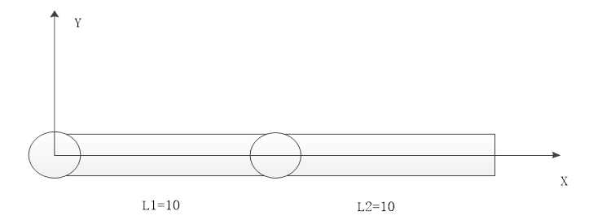
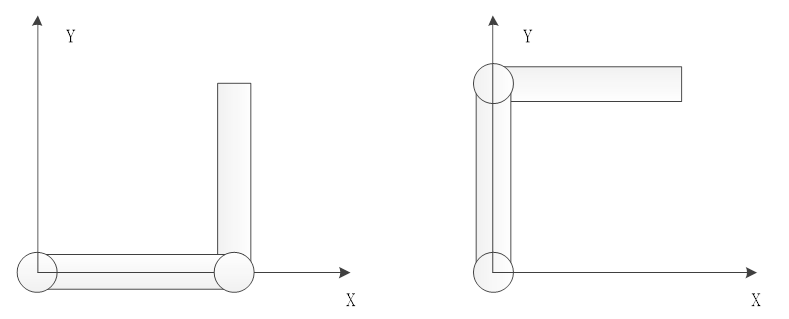

|
机械手计算指令 | |||||||||||||||||||||||||||||||||
|
描述 |
坐标转换函数。 使用时必须在正逆解建立的情况下。 使用时必须base正确的轴号。逆解时，base虚拟轴；正解时，base关节轴。 按照正确的顺序填入相应个数的数据。填入的个数与数据，与?*frame一致。 | ||||||||||||||||||||||||||||||||
|
语法 |
FRAME_TRANS2(tablein，tableout, dir) tablein：table数组中的索引号，从这个索引开始连续存储数据，正解时输入关节坐标，逆解时输入虚拟轴坐标列表，最后附加姿态 tableout：table这个索引开始存储数据，正解时输出虚拟坐标，最后附加姿态，逆解时输出关节坐标列表 dir：模式选择
| ||||||||||||||||||||||||||||||||
|
适用控制器 |
通用 | ||||||||||||||||||||||||||||||||
|
例子 |
以scara结构为例，第一关节轴L1=10，第二关节轴L2=10。table(100)作为输入坐标的存放位置，table(200)作为输出坐标的存放位置。 建立连接后，关节轴原点坐标（0,0），此时虚拟轴坐标为（20,0），如下图。  虚拟轴坐标 (10,10) 时，有两种姿态 关节轴 (0,90) 和关节轴 (90,-90)  坐标转换表
|